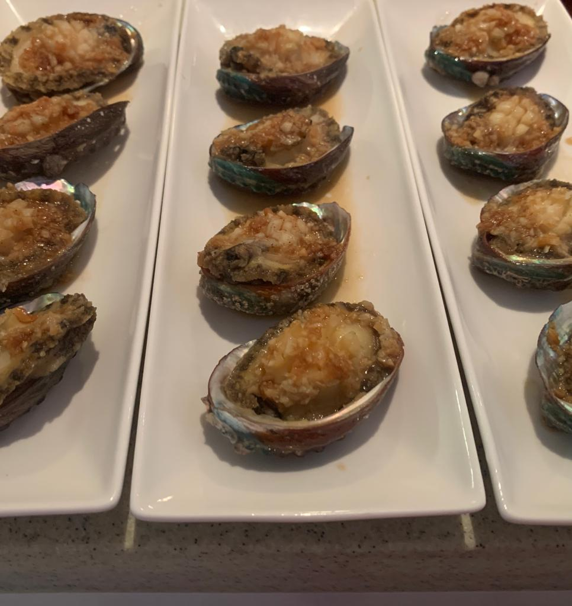
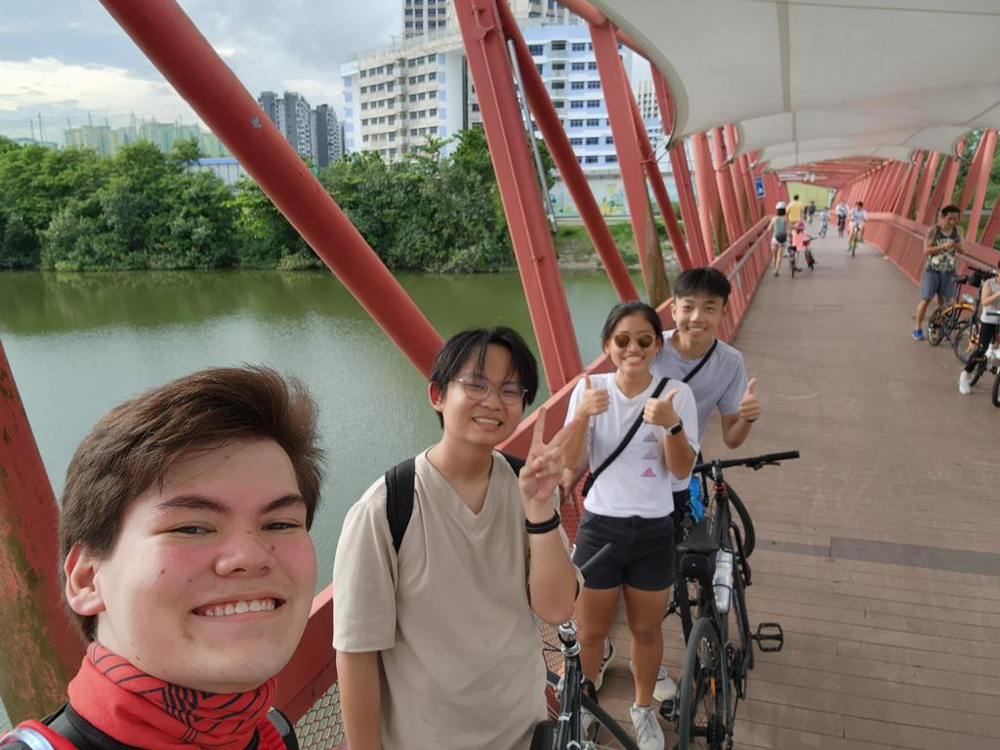
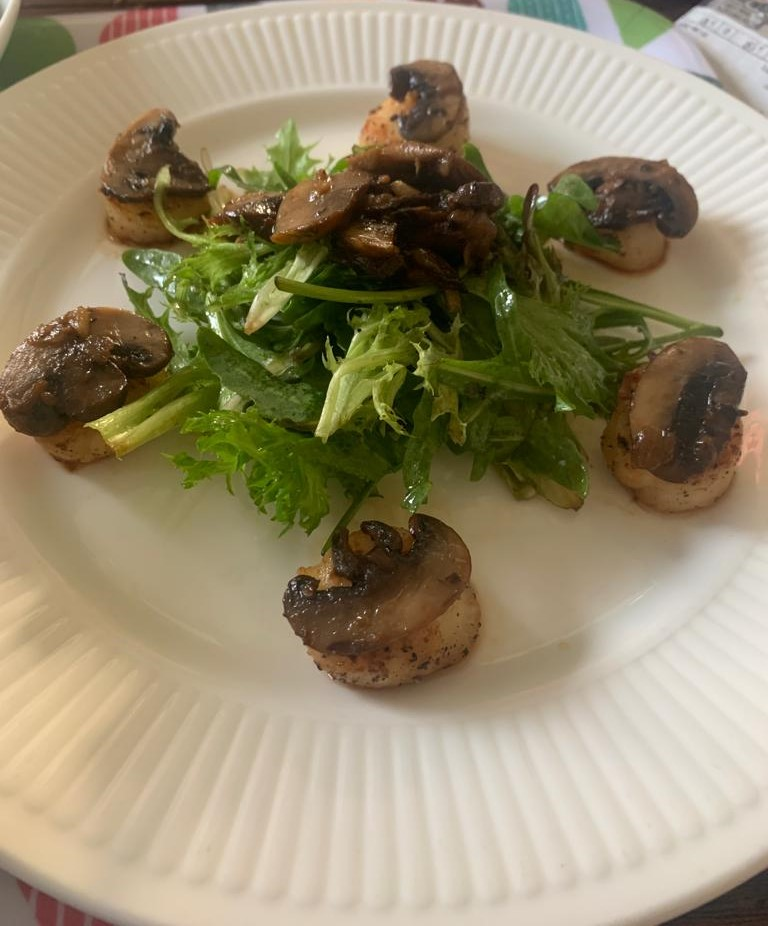

Hello! I am Alexi, a student from TJC's class of 2023. I am in 04/22 (the computing class), and take PXME (Physics, Computing, Mathematics, Economics), all at the H2 level. I do take H3 Economics too! Outside of the classroom, I am the president of the TJC Choir, and am also a part of the Organising Committee for the DEFY Camp.
My interests lie in cooking, cycling, rugby and football, along with finding out more about the world due to my inquisitive nature. Many regard me as somewhat of a polymath (albeit I might not have extensive knowledge about most fields). You could say that I'm a jack of all trades, but master of none. But then again, that is better than being the master of one right? I do also enjoy listening to a wide range of music ranging from classics such as Pachelbel's Canon to choral pieces like Carlos Fonseca's Jubiaba or Eriks Esenvalds' Stars, musicals like Hadestown(my personal favourite), Les Miserables or Moulin Rouge and pop/rock.
  Regarding my future aspirations, I am still exploring my options. Currently I am looking into finance, the economy, IT or physics related jobs, but given the ever changing global climate, it has been difficult for me to decide on a specific one. At this point in time I am looking towards pursuing a double degree in Finance and in Computer Science. When I grow up, I'd love to be able to get a fully-kitted out kitchen for me to experiment with different dishes and flavours, or to make my own little workshop to do woodwork or metal work. A dream would also be to travel the world to visit different historical places, experience different cultures and enjoy the natural wonders of the Earth. I have already seen the Pantheon in the Athens, walked the streets of Madrid and even went husky sledging in Lapland, but there is still so much left to explore on our beautiful planet!
I got accepted into TJC via the direct school admission (DSA) programme, through choir. Now I must admit, it was not my intention to use choir to get DSA to TJC. In fact, I actually intended to use leadership and join the Student Council (due to my rich amount of leadership experiences gained from being the president of a student leadership group back in my secondary school). Long story short, leadership was my first choice, and choir second (because I was in my secondary school's choir and felt that there was no harm in adding it in too), but in the end I accepted the offer from the choir, and have not had any regrets. You can find out more about my choir life here!
I have also participated in countless events both inside and outside of school. I firmly believe that any opportunity, no matter big or small, is a way for me to grow not only as a leader, but as a person too. I also see them as great avenues for me to give back to the school which has been giving me so much. It's only fair that I try my best to reciprocate. You can read all about them here!